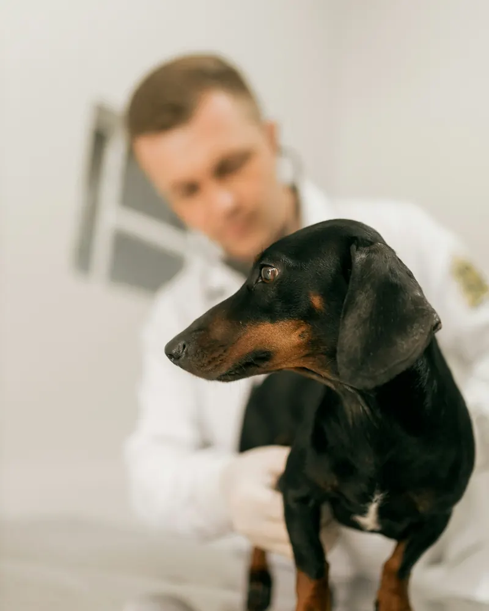
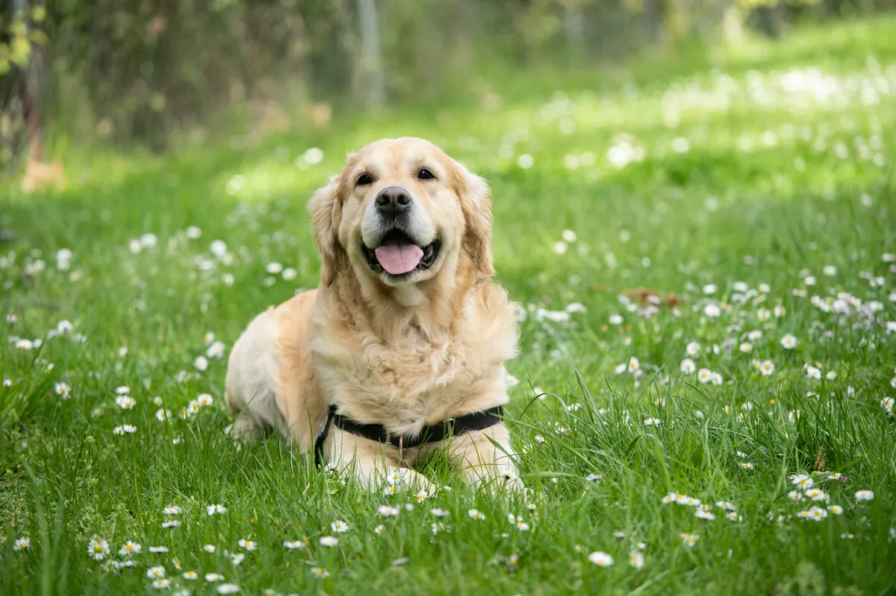
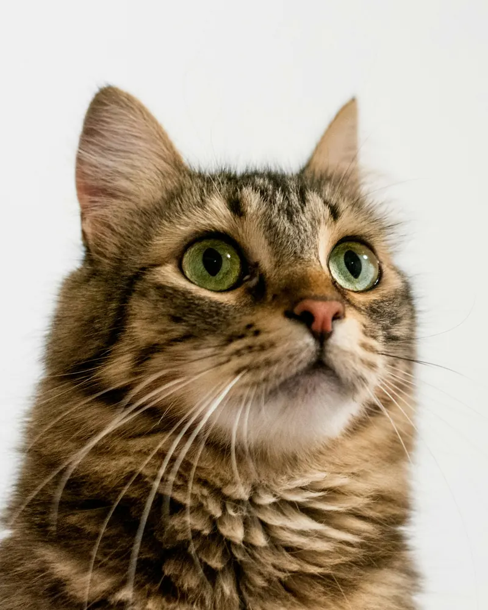
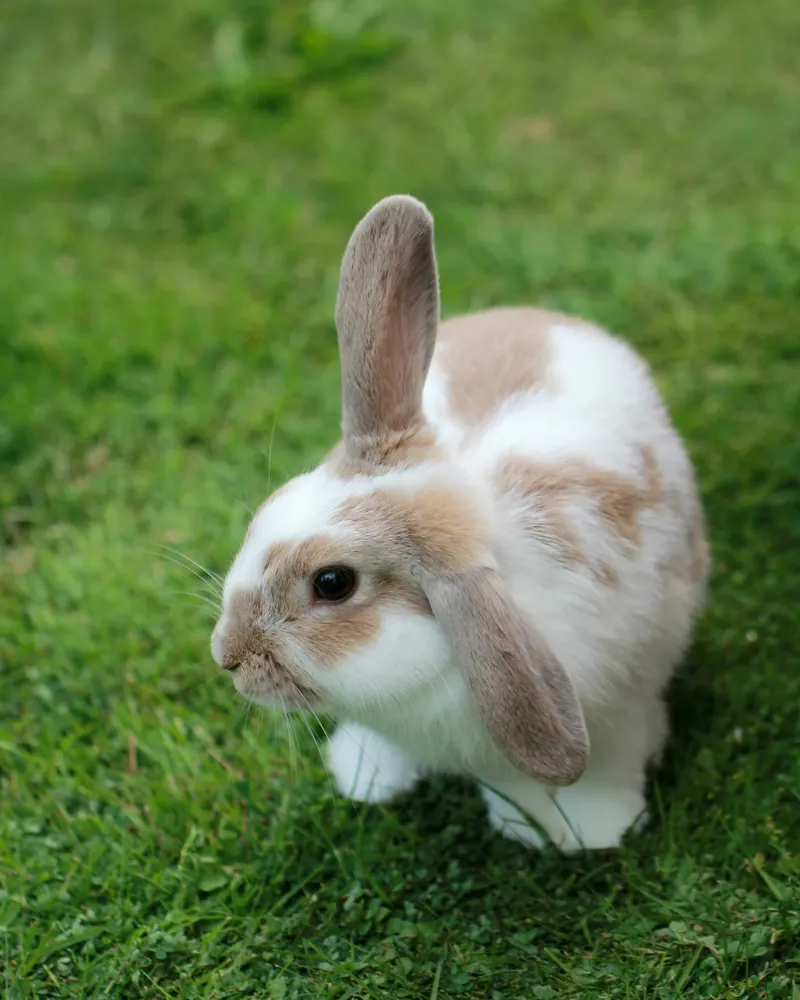

Weterynarz w Dobrej, dla psa, kota i krowy
Gabinet weterynaryjny lek. wet. Piotr Joniec, przy trasie Limanowa - Mszana Dolna. Szczepienia, leczenie, chirurgia i stomatologia zwierząt domowych oraz rozród bydła.

Dobra 494
Kogo leczymy?

Pies
- szczepienia i odrobaczanie
- kleszcze i pchły
- zęby i kamień nazębny
- zabiegi i sterylizacja



W czym pomagamy
Pełna ofertaProfilaktykaszczepienia psów, kotów i królików, ochrona przed kleszczami i pchłamiChoroby wewnętrzneukładu pokarmowego i wątroby, układu moczowegoDermatologiabadania diagnostyczne, terapia atopii i alergiiStomatologiausuwanie kamienia nazębnego metodą ultradźwiękową, ekstrakcja zębówChirurgiasterylizacja i kastracja, zabiegi na jamie brzusznejLaryngologia i położnictwolaryngologia, położnictwo i ginekologia